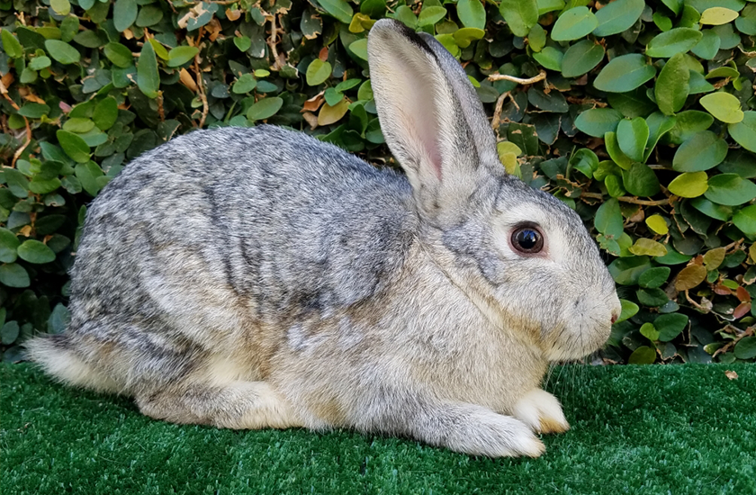
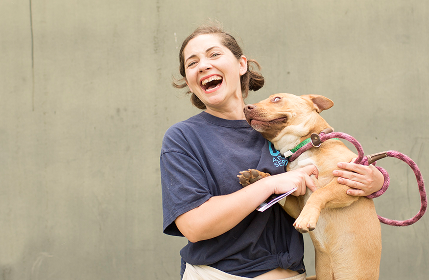
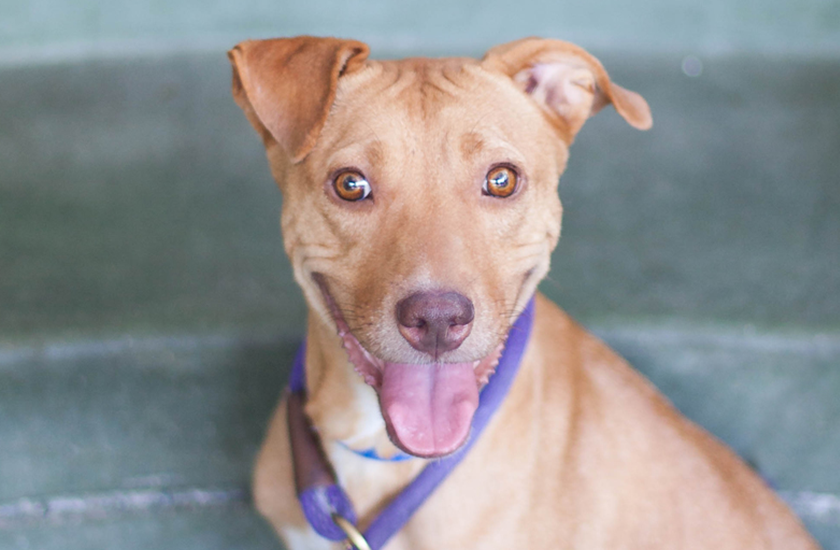

Our Centers are open by appointment only, so you can still foster and adopt a pet. Due to COVID-19 and City Order, our Administrative Offices are temporarily closed to the public.
For general assistance, please call (888) 452-7381. | For assistance with animal licensing, please call (213) 482-9550.


Adopting a Bunny
Issued Dec.4.2020
Rabbits are often known affectionately by the pet name bunny or bunny rabbit , especially when referring to young, domesticated rabbits. A healthy indoor pet rabbit can live up to 10 years and longer. They enjoy throwing around toys and chewing on cardboard. In some home environments, they can develop an affinity with cats and even dogs. Though they are often caged in small areas, they can be trained to live as free-roaming pets, similar to cats and dogs. As pet rabbit medicine, diet and living environment improves, the rabbit’s life span increases...
Click here to read more ü†™

How to improve your friendship with your pet
Issued Nov.8.2020
Regular veterinary care and vaccinations are important to keep your companion animals healthy. You will want to visit veterinary offices and decide who your best friend’s doctor is going to be before he or she gets sick. Ask your friends who have pets for a recommendation. Look for an office that is clean and smells good, the receptionist and staff are welcoming. Make an appointment to see the entire clinic and to meet the veterinarian. If you are uncomfortable for any reason, find another veterinarian...
Click here to read more ü†™

Grooming for Dogs
Issued Oct.12.2020
Clean your companion animal’s ears at least two times per month. The skin inside the ear flaps should be pale pink. If there is a bad odor and/or any red, brown, or black skin, you should have a veterinarian examine your companion animal’s ears. Use a cotton ball moistened with baby oil or warm water to gently wipe the opening to the ear canal and ear flaps. Do not stick anything into the ear canal.Brush your companion animal’s teeth. Companion animals can get cavities too! Companion animal supply stores sell toothpaste with a small rubber “toothbrush” for cats and dogs that you put on you finger and...
Click here to read more ü†™